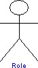
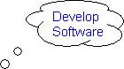
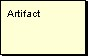
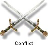
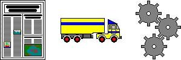
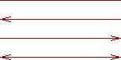
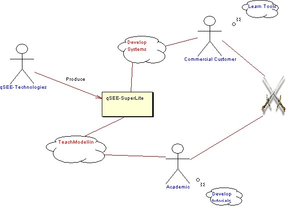

|
|
Rich Picture
The rich picture tool allows the main elements within an organization
and/or situation to be modeled. Typically rich pictures are used as
conceptual analysis tools to help identify the general structure and
stake-holders within a particular context. Relationships between the
elements may be easily represented as can roles, actions and activities.
This tool allows graphical based elements to be displayed meaning that
"real" images can be used to represent physical objects.
To view the main multi-CASE help page click
here
|
|
|
|

Role
Definition: A role element represents a particular function or
responsibility that exists within the system being modeled. A role may represent
a person, but can equally represent an external device or automated process,
providing the element being represented plays the signified role within the
system. Roles often have associated actions
identified.
Representation: A role is represented by a stick man symbol with the
name displayed below. Roles can also be represented by a user selected image.
When a role is represented this way it is known as an image role. e.g. a
standard role -


Creation: To add a role right click on the rich picture diagram or the
rich picture icon within the project tree and select the "Add Role" option from
the menu. Left click on the diagram where you wish the role to be positioned and
enter the name of the role when prompted. To add a role as an image right click
on the rich picture diagram or the rich picture icon within project tree and
select the "Add Role As Image" option from the menu. Left click on the diagram
where you want the role to be positioned and then select the image file you wish
to use.
Rules: A role should always be given a name.
Operations: Move Forwards/Backwards, Bring to Front, Send to Back,
Delete, Add Role Action, Add Link, Convert To Image/View As Symbol, Change
Role/Text Color, Edit Role Annotation/Name
Back To Top
Role Action
Definition: A role action is a specific task that is completed by the
role with which it is associated.
Representation: A role action is represented by a cloud symbol with a
name label inside. It also has two small circles which always aim towards the
related role.

Creation: To add a role action right click on the appropriate role and
select the "Add Role Action" option from the menu. When prompted enter the name
of the role action and click "OK".
Rules: A role action should always be given a name.
Operations: Move Forwards/Backwards, Bring to Front, Send to Back,
Delete, Change Text Color, Edit Action Annotation/Name
Back To Top
Activity
Definition: An activity element represents the work to be completed in
order to reach a required outcome. An activity may contain several tasks and be
related to several roles via links. Activities may
also have a subordinate model, allowing more detailed information about the
activity to be shown on a lower level rich picture.
Representation: An Activity is represented by a cloud symbol with a
name label inside.

Creation: To add an activity right click on the rich picture diagram
or the rich picture icon within the project tree and select the "Add Activity"
option from the menu. Left click on the diagram where you want the activity to
be positioned and enter the name of the activity when prompted.
Rules: An activity should always be given a name. An activity can have
at most one subordinate model.
Operations: Move Forwards/Backwards, Bring to Front, Send to Back,
Delete, Add Link, Create/View/Delete Subordinate Model, Change Text Color, Edit
Activity Annotation/Name
Artifact
Definition: An artifact element represents a document that is used
when working on tasks such as those represented by activity
elements.
Representation: An artifact is represented by a rectangle with a name
label inside. By default the rectangle is yellow.

Creation: To add an artifact right click on the rich picture diagram
or the rich picture icon within the project tree and select the "Add Artifact"
option from the menu. Left click on the diagram where you want the artifact to
be positioned and enter the name of the artifact when prompted.
Rules: An artifact should always be given a name.
Operations: Move Forwards/Backwards, Bring to Front, Send to Back,
Delete, Add Link, Change Artifact/Text Color, Edit Artifact Annotation/Name
Conflict
Definition: A conflict represents a potential problem that already
exists or may occur in the future. A conflict may be positioned between
two roles for example, or even connected to the conflicting
elements using links.
Representation: A conflict is represented by two crossed swords.

Creation: To add a conflict right click on the rich picture diagram or
the rich picture icon within the project tree and select the "Add Conflict"
option from the menu. Left click on the diagram where you want the conflict to
be positioned.
Rules: A conflict should always be given a name.
Operations: Move Forwards/Backwards, Bring to Front, Send to Back,
Delete, Add Link, Change Text Color, Edit Conflict Annotation/Name
Images
Definition: Images provide a way of representing processes, actions,
artifacts etc. graphically within rich picture diagrams.
Representation: Images can be selected from a default list that
includes the examples shown below but can also be specified by the user.

Creation: To add an image right click on the rich picture diagram
background and scroll over the "Add Image" option with the mouse. This will
produce a list of built in images to choose from. To select one of the built in
images left click on its name and left click on the diagram where you wish it to
be positioned. To add an image of your own select the option "Own Image" from
the bottom of the list. This will open a dialogue window that will allow you to
browse and select the image required.
Rules: An image may be given a name.
Operations: Move Forwards/Backwards, Bring to Front, Send to Back,
Delete, Change To, Add Link, Change Text Color, Edit Image Annotation/Name
Link
Definition: A link is used to model some type of relationship or
interaction between two elements within the rich picture. The nature of
this relationship is dependent on the context of the model, i.e. the meaning of
the relationship is determined by the modeler rather than the tool.
Representation: Links are represented by lines between entities. These
can be simple lines, single arrows pointing either way or double headed arrows.
To change the appearance of a link right click the link and select one of the
four "Show As ....." options.

Creation: Links are created by right clicking on the element you wish
to be the source of the link and selecting "Add Link" option from the menu. You
must then left click the element that you wish to be the destination of the
link. The link will now be drawn between the two elements.
Rules: Links may connect any two elements, and can even link to the
diagram background if required.
Operations: Move Forwards/Backwards, Bring to Front, Send to Back, Delete,
Add/Remove Link Point, Show As ----- / <---- / ---->
/ <--->, Change link Color, Edit Link Annotation/Label.
Example
Below is an example of a Rich Picture Diagram.
